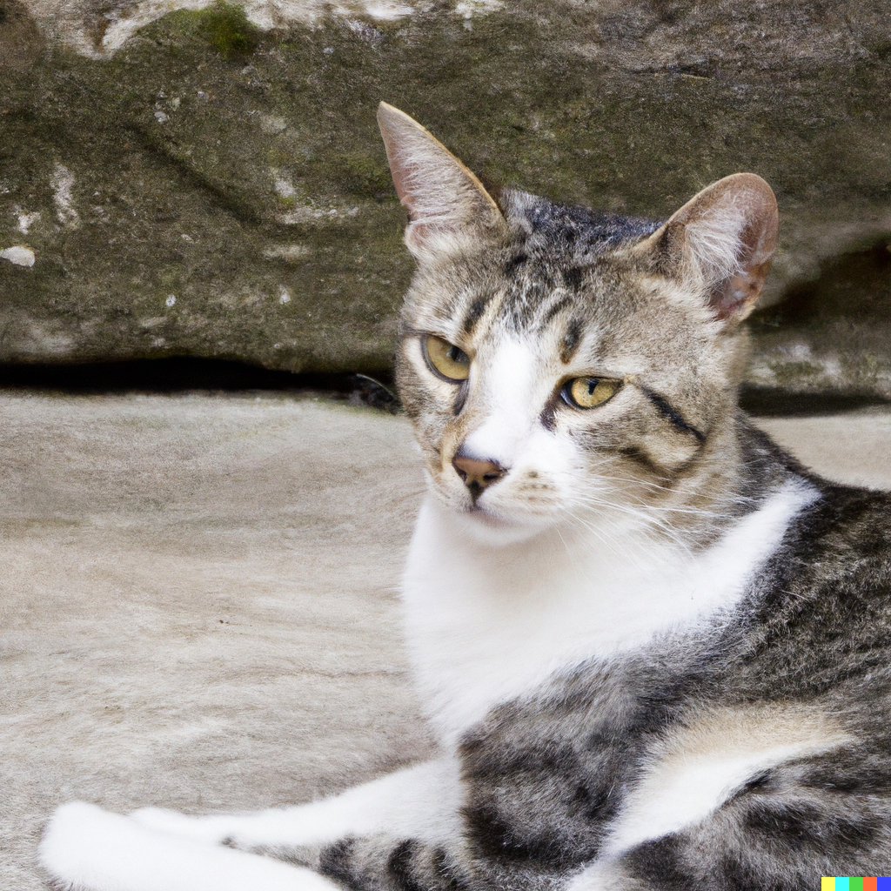
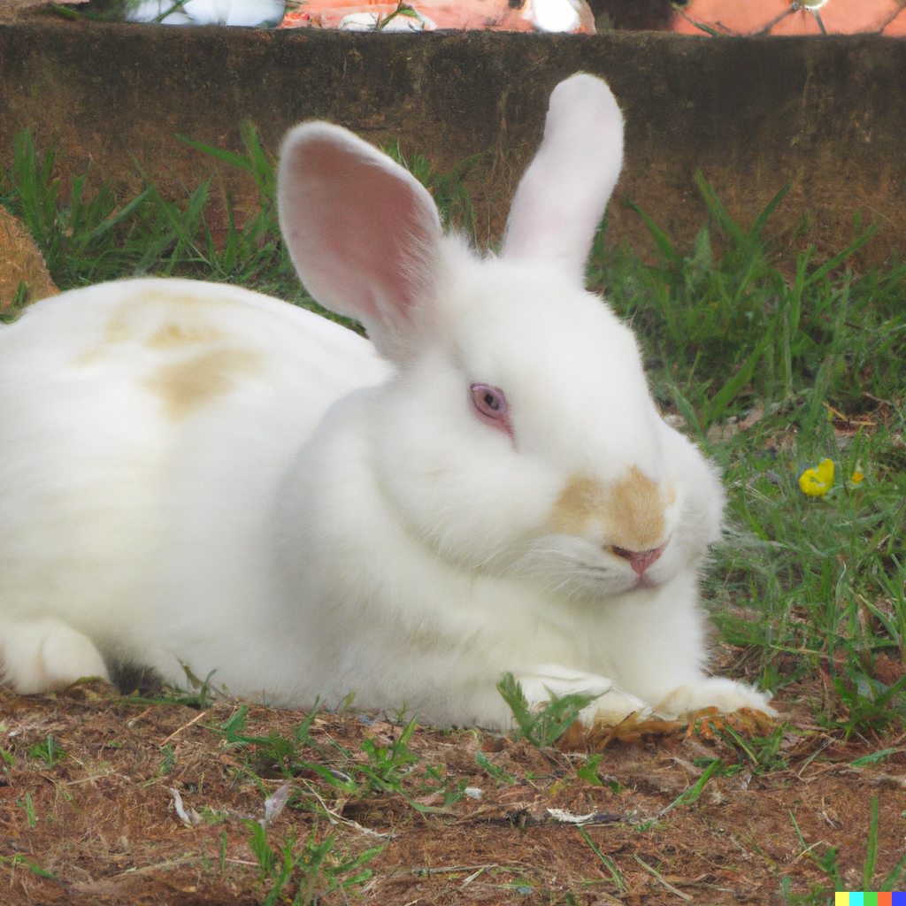
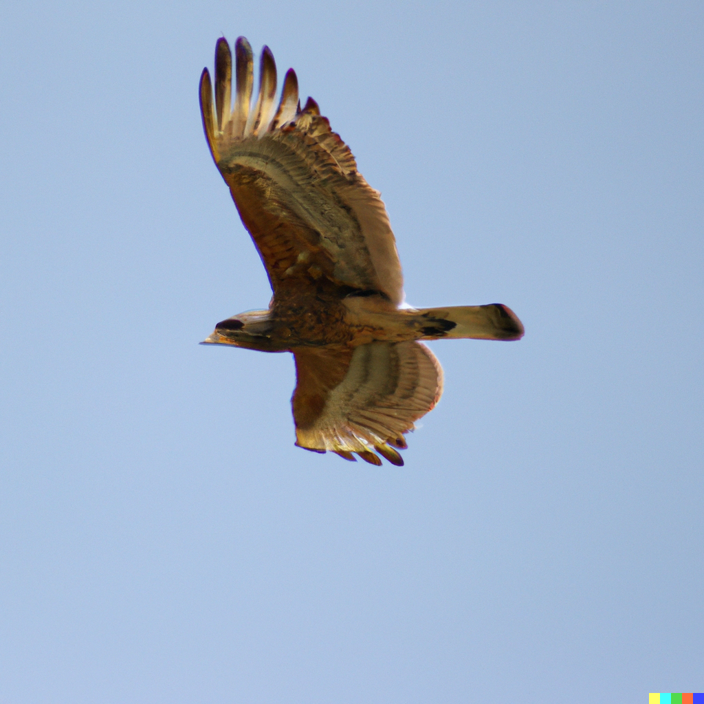
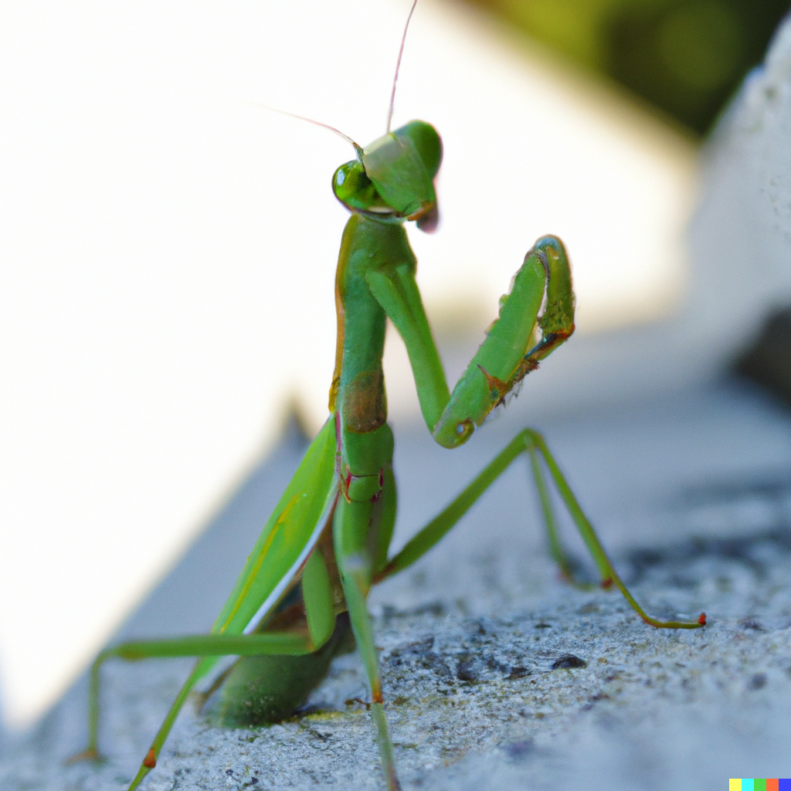

Aqui você encontra tudo o que precisa de informações sobre animais.
Qual Animal você deseja saber mais sobre?
Tudo Sobre Cachorros aqui!
Tudo Sobre Gatos aqui!
Tudo Sobre Coelhos aqui!
Tudo Sobre Gaviões aqui!
Tudo Sobre Louva Deus aqui!
O cão (nome científico: Canis lupus familiaris),no Brasil também chamado de cachorro, é um mamífero carnívoro da família dos canídeos, subespécie do lobo, e talvez o mais antigo animal domesticado pelo ser humano. Teorias postulam que surgiu do lobo cinzento no continente asiático há mais de 100 000 anos. Ao longo dos séculos, através da domesticação, o ser humano realizou uma seleção artificial dos cães por suas aptidões, características físicas ou tipos de comportamento.
O gato (nome científico: Felis silvestris catus) ou gato doméstico é um mamífero carnívoro da família dos felídeos, muito popular como animal de estimação. Ocupando o topo da cadeia alimentar, é predador natural de diversos animais, como roedores, pássaros, lagartixas e alguns insetos. Segundo pesquisas realizadas por instituições norte-americanas, os gatos consistem no segundo animal de estimação mais popular do mundo, estando numericamente atrás apenas dos peixes de aquário.Consta em trigésimo nono na lista das 100 das espécies exóticas invasoras mais daninhas do mundo da União Internacional para a Conservação da Natureza (UICN).
Os coelhos são uma espécie de mamíferos quadrúpedes da ordem dos lagomorfos pertencente à família dos leporídeos, em geral dos gêneros Oryctolagus e Sylvilagus. Caracterizam-se pelas orelhas e patas compridas e vasta pelagem. Esses pequenos mamíferos encontram-se facilmente em muitas regiões do planeta. São animais herbívoros utilizados pelo homem para alimentação, o pêlo para vestuário ou comumente como cobaias em estudos científicos.
Os gaviões são aves de rapina da família dos Acipitrídeos. Os gaviões são comuns em todos os continentes, com exceção da Antártica. A subfamília Accipitrinae inclui açores, gavião-da-europa, tauató-miúdo e outros. Esta subfamília são principalmente aves da floresta com caudas longas e alta acuidade visual. Eles caçam correndo de repente de um poleiro escondido. Na América, os membros do grupo Buteo também são chamados de gaviões; este grupo é chamado de "buzzards" em outras partes do mundo. Geralmente, eles têm asas largas e construções robustas, além de asas relativamente maiores, cauda mais curta e voam distâncias maiores em áreas abertas do que os aciptrídeos. Estes animais descem ou atacam suas presas em vez de caçar em uma rápida perseguição horizontal. Todos estes grupos são membros da família Accipitridae, que inclui os gaviões e buzzards, assim como os milhafres, harriers e águias. Alguns autores, ainda, usam "gavião" geralmente para qualquer aciptrídeo pequeno a médio que não seja uma águia. Um búteo-de-cauda-vermelha (Buteo jamaicensis), um membro do grupo Buteo Os nomes comuns de algumas aves incluem o termo "gavião", refletindo o uso tradicional e não a taxonomia
Os louva-a-deus, louva-deus ou cavalinho-de-deus são insetos pertencentes à Ordem Mantodea (do grego mantis = profeta; eidos = aparência).Possuem corpo geralmente alongado e estreito (baciliforme) que varia de 0,8 a 17 cm. Há grande variedade de formas e cores dentro do grupo, geralmente associados à estratégias de camuflagem e mimetismo. Existem cerca de 2 400 espécies, 430 gêneros e 15 famílias. A maior e mais comum família de Mantodea é a Mantidae. Seu nome popular decorre do fato de que, quando está pousado, as pernas anteriores remetem à posição das mãos em oração. São animais venerados na China, existindo, inclusive, estilos de Kung-Fu inspirados em seus movimentos. Há também registros de civilizações antigas, como a Grécia, o Egito e a Assíria, que consideravam o louva-a-deus um animal com poderes proféticos e sobrenaturais, capaz de identificar a localização de objetos, animais ou pessoas perdidas em florestas. O voo do louva-a-deus remete a voos de caças de combate, conseguindo desviar de ataques de morcegos, um dos seus predadores, por meio de uma audição ultrassônica, executando ‘’mergulhos’’ durante o voo.O comportamento do grupo é complexo, parecendo haver grande capacidade de memorização e de aprendizagem. São insetos comumente mantidos como animais de estimação.
